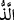
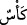

hissi bir pınardır. Başka bir topluluk sevgi pınarından içerler, sevgi ise gaybîdir,
örtülüdür. Diğer bir topluluk da sevgiliden içerler ki o sedeflerde saklı bir sırdır.
Sevgi rüzgarının hoş ve mülayim esintisi size hayat verir,
Halis içki sizi oyalayıp meşgul eder.
Bu sevgi rüzgarı ve halis içki
Size sevgiliden gelir ve sizi sevgiliye ulaştırır.
46. Berraktır, içenlere lezzet verir.
“Berraktır,” sütten beyazdır; “içenlere lezzet verir.” Dünyada beyaz şarap
görülmemiştir ve görülmeyecektir. Bu beyaz şarap kudsî hadiste beyan edilen hiçbir
gözün görmediği, hiçbir kulağın duymadığı ve hiçbir beşerin akıl ve hayaline gelmediği
nimetler cümlesindendir. “__WORD__ kelimesi “__WORD__ kelimesinin müennesi olup aynı
zamanda “__WORD__ kelimesinin de sıfatıdır. Bu “__WORD__ beyaz şarabı “lezzet” diye nitelemek
ya mübalağa içindir yani o kadeh öyle leziz tatlı hoş ve güzeldir ki leziz ve nefis
oluşuyla sanki lezzetin ta kendisidir, demektir. Yahut “lezzet” kelimesi “__WORD__” kelimesinin
müennesi olup “leziz” mânâsındadır. Cennet şarabını lezzet diye nitelemek, cennet
şarabının dünya şaraplarına benzemeyişindendir. Zira dünya şaraplarında hiçbir şekilde
cennet şarabının lezzeti yoktur.
47. O içkide ne sersemletme vardır ne de onunla sarhoş olurlar.
Dünya şaraplarının aksine “O içkide ne sersemletme vardır ne de onunla sarhoş
olurlar.”
Dünya şarapları böyle değildir. Zira onlarda baş ağrısı, karın sancısı, sarhoşluk ve
günah gibi sersemletmeler vardır. Bu söz müsnedi ileyhin müsnede hasredilmesi
kabilindendir. Yani cennet şaraplarında dünya şaraplarında bulunan nitelikler mevcut
değildir. O şarapta bir âfet ve bir illet yoktur. Durumun bozulması, aklın gitmesi, baş
ağrısı, sızmak ve bunlardan başka rezillikler dünya şarabında vardır.
Bu söz de aynı şekilde “__WORD__ kelimesinin sıfatıdır. Burada “__WORD__”nın haberi isminden
önce geldiği için “__WORD__” amel edememiş ve tekrar edilmiştir. “__WORD__ kelimesi gâile
mânâsında her eziyet, zarar ve sıkıntı için kullanılan bir isimdir. el-Müfredât’ta der ki:
Allah Teâlâ cennet şarabının niteliğini anlatırken: “O içkide ne sersemletme vardır ne